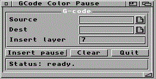

|
Menu | OctoControlSpeak | SlicerMUI GCodeColorPauseMUI A quoi ca sert ?GCodeColorPauseMUI insere une pause dans un G-code pour changer le filament manuellement a un layer choisi. ImportantCet outil est prevu pour une imprimante mono-tete / mono-filament. Pour une imprimante multi-tete ou multi-couleur automatique, utilisez le slicer PC et les commandes d'outils propres a la machine, par exemple T0, T1, T2. Champs et boutons
Sequence insereeM400 G91 G1 Z5 F300 G90 G1 X10 Y10 F3000 @pause Changement couleur G91 G1 E5 F150 G1 E-1 F300 G90 La petite retractation aide a eviter un paquet de filament au moment de la reprise. Workflow
|